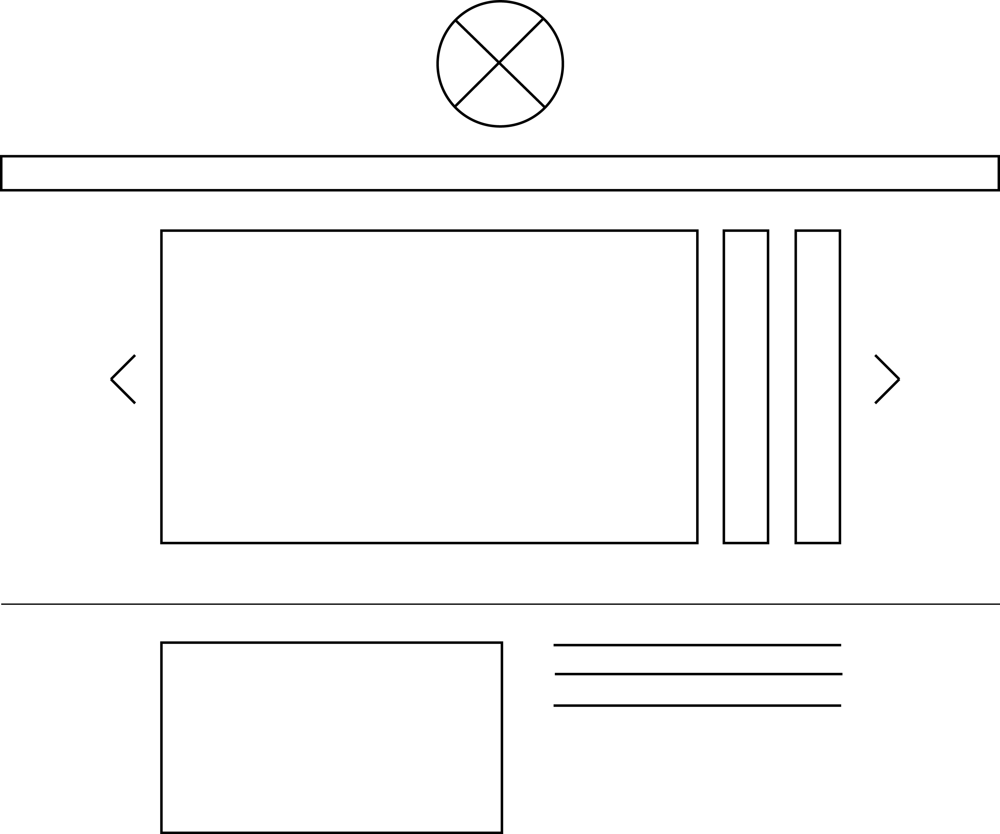
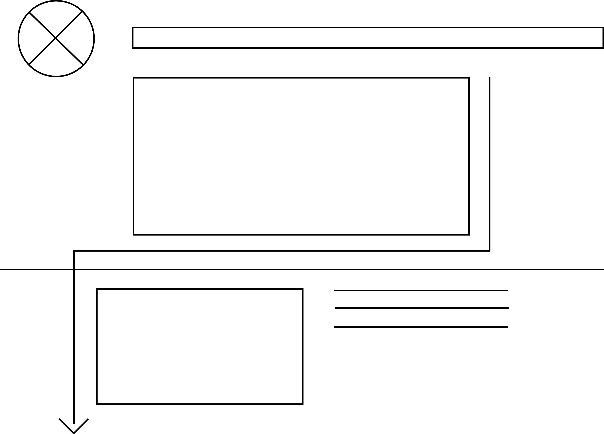
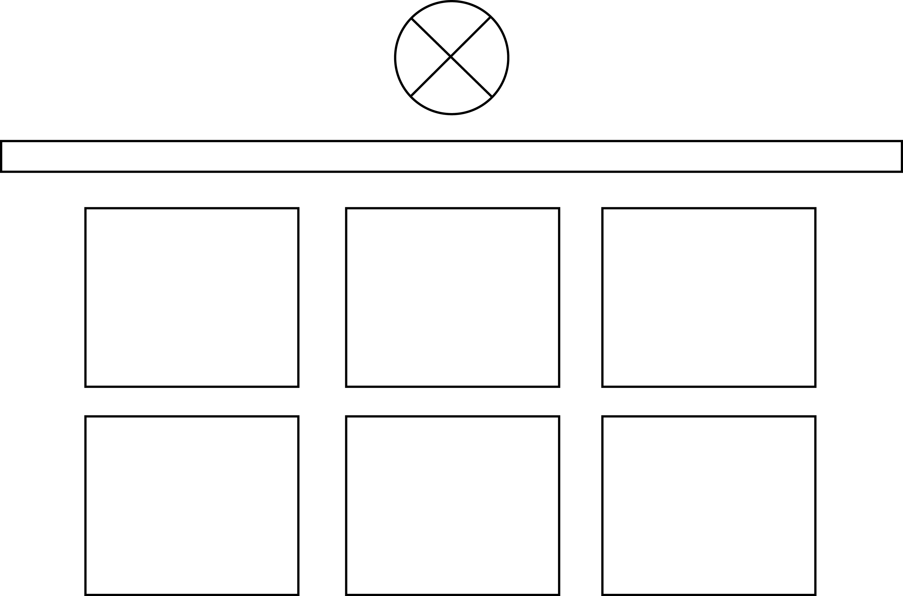
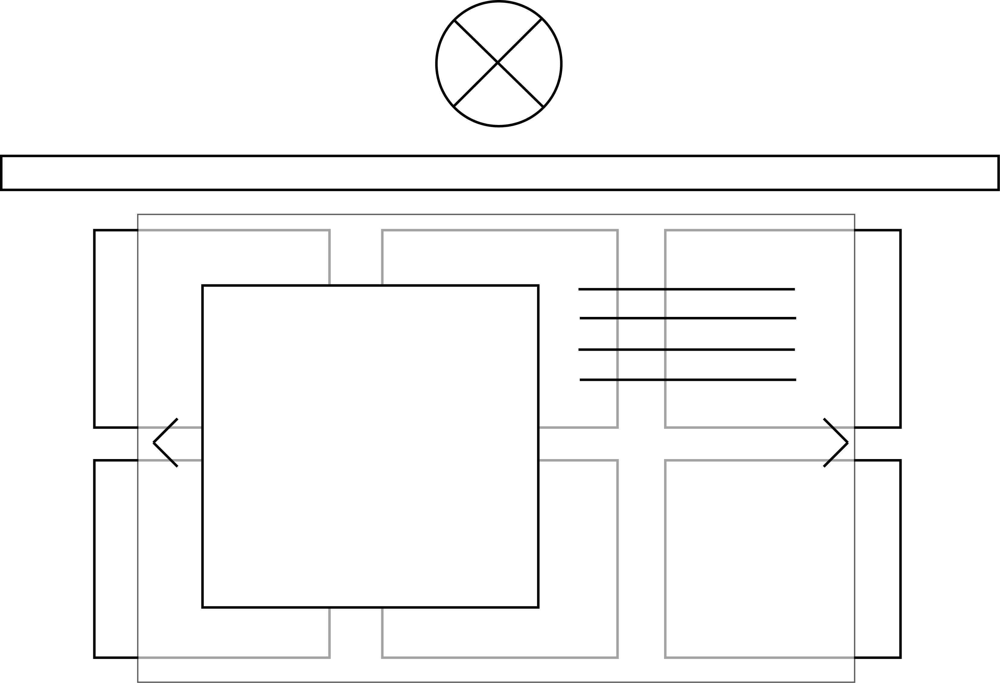
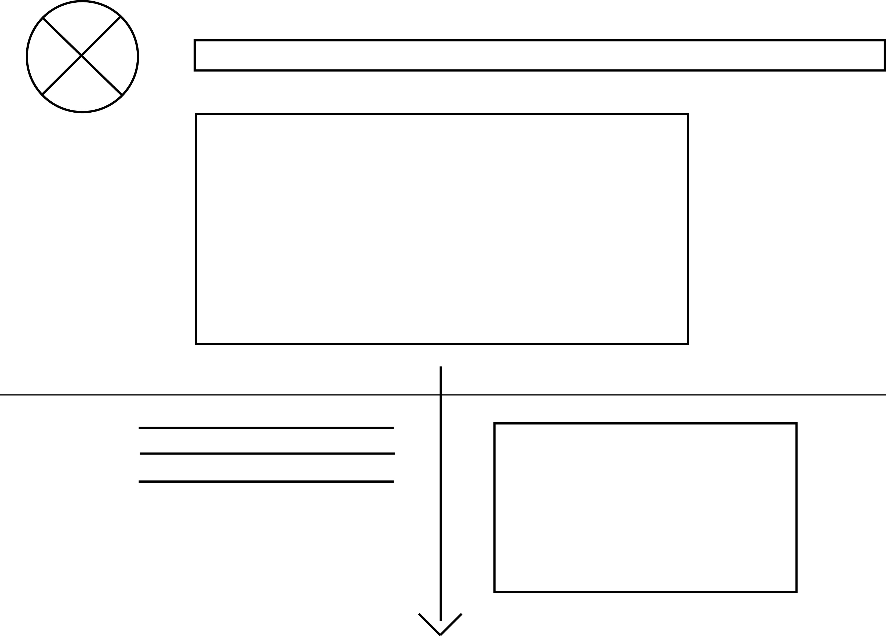
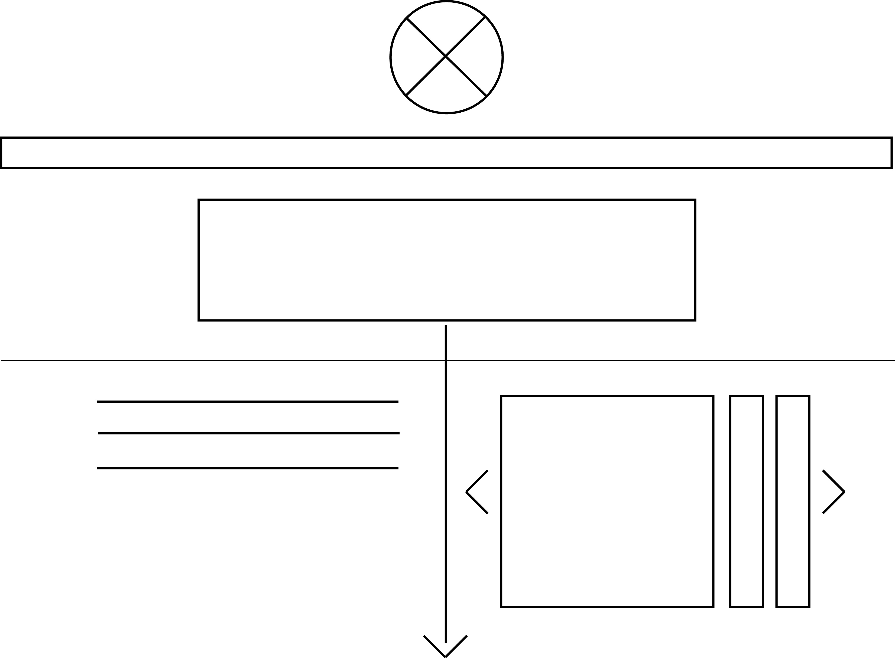

I am most inspired by onedesigncompany.com and esmewinter.co.uk.
One Design Company
Ways this website can benefit from a reexamination of space, size or balance:
I greatly admire this website's structure and style, which I learned this week is called flat design, so I wouldn't suggest they reexamine or change much on the website. However, I would maybe suggest reexamining the page and the sections featuring the company's work. Every other page utilizes negative space to allow elements to grab your attention and guide your eye throughout the page. While looking at this page, I am not sure where to begin. I believe the intention of the page is for the viewer to explore the work the company has done, so this layout speaks to that purpose. However, I am just saying that a bit more negative space between images might help to frame the work a little better and not have the page look as cluttered.
Esmewinter.co.uk
Ways this website can benefit from a reexamination of space, size or balance:
I quite like the simplicity of this site. The basic black and white motif is classic and the photos pop off the page, drawing attention to what needs attention. The photos speak for the website, telling its story and defining its purpose. I only have 2 suggestions. One, the information featured on the blog tab of this website weighs down the pages on the left. I understand the text not extending across the entire length of the page because it would violate the 2.5 alphabet rule. Any text extending longer than the length of 2.5 alphabets becomes hard to read, yet I might reexamine the placement of the text and its adjoining photo. Perhaps play around with center alignment or work to get another photo so the page isn't visually weighed down too much to one side. Two, just a style suggestion, wherever text is featured, I notice a slight box behind it that is a shade or 2 darker than the background. It doesn't really serve a purpose and if it is meant to give the text some effect than the box should be a bolder choice of color. Either get rid of the box all together and just have the text sit in front of the background or make the box a drastically different color. If you're going to make a statement, then make it. Having the box be a shade darker just looks awkward and almost pointless. Hopefully that makes sense.
The websites are very similar, if not identical, when it comes how they use size and balance, yet how the One Design Company's website uses space is different than how Esme Winter's site incorporates it into her site. Esme Winter's website has one background that frames all of its elements while ODC's website is made up of various shapes that each have their own background and content it frames. Both utilize space effectively, but how they present that relationship between positive and negative space varies.
Both sites' utilization of size to organize their sites appeals to me. I admire the design of the logo and the navigation bar followed by a large photo that extends across the entire page followed by subheadings and columns or blocks of text and photos. I also admire the use of rows and columns as enhanced by the principle of space to separate each of the sections and help guide my eye down the page. The horizontal elements help guide my eye across the page when I need to read and refer to a related photo on the side while the vertical blocks effectively guide me to look at an image followed by its related text underneath. The space between elements and how they are balanced individually and in relation one another allows me to explore easily and not be confused as to what the next step is. The logic behind these simple layouts is quite amazing. The hierarchy and flow make both websites inspirations that I will refer to when I design my website.
This week, I visited different websites and took note of aspects of each I admired. I applied those ideas and principles as I brainstormed ideas for a personal portfolio website I want to create one day. Sketches for the home pages and a few of the subpages are featured below.

The version of my home page would feature a logo as the central focal point with smaller text below featured in the navigation bar. It would then showcase an assortment of large photos featuring my work for viewers to scroll through. The following rows and columns would present information and photos about me and my recent endeavors. The text and photos would be smaller than the text and photos about them thus creating a hierarchy with the most important information at the top and supporting information below. With space between each of the elements, varying size objects and text and balance amongst elements featured on the left and the right of the page, the usability and appeal of the website will be one in the same and a great flow will have been created.

This second version accomplishes the same ideas as the previous solution with the only differences being the placement of the focal point and the added visual element to guide the eye down the page. The focal point starts the eye at the left of the page and asks readers to explore this page like they were reading a book. The other added element would be an actual line that would move down and across the page as the viewer scrolled down the page. It would draw attention to itself and force users to watch it and view whatever it directed the eye to.

This page would showcase images of the work I have done. By clicking a square, a larger version and its description would open in another window. The focal point would be a logo in the center with a navigation bar below. The hierarchy would be clear. Start at the logo then look to the text in the navigation bar, which would be slightly smaller in size, and continue on to explore my work. The squares would be the exact same size. One is not more important than another. The user is invited to explore. With space between the images setup in a balanced and equal size grid, the page would be easy to navigate. Therefore, it would have a simple and effective flow.

This version of the page would utilize a focal point, flow and hierarchy to create an effective and stylish page the same as the above version. The only difference would be seen when one clicked on an image. A translucent box would appear in the same window the page a user is currently on. It wouldn't involve opening another window. On that box, a larger version of the thumbnail image would appear followed by a header and text to the right. A nice balance and an effective flow would be created as a hierarchy is established. The eye would go to the image, then to a header of larger text followed by smaller text that would describe what that project was about. Viewers could scroll through my work on that box window or close it and go back to exploring the actual page. It would engage users and enhance the site's usability.

This page would essentially be my resume, only I want to depict my school and work history in a timeline format. This page would begin at the top left with the logo as the focal point followed by the navigation bar. Then, it would feature an animated graphic asking the question...Who is Emily Reese? The visual hierarchy is established and insists viewers continue through the page to learn more from my subheadings, text and smaller images and photos. As the viewer scrolled down, a line would appear down the middle of the page and present text and images that describe and illustrate aspects of my life. This balanced layout would create a great flow as users worked their way down the page. It would be easy to follow and use.

This version utilizes a focal point to establish a hierarchy and flow in the same way the previous version does with 2 variations. In this version, the focal point is centered and in line with the visible line that will be created later on in the page on the timeline. The eye would not wander side to side. It would just have to venture up and down the page and it would make navigating the page even easier. This version also incorporates an option to have multiple photos and images represent one time in my life.